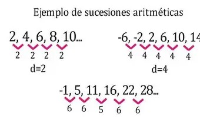
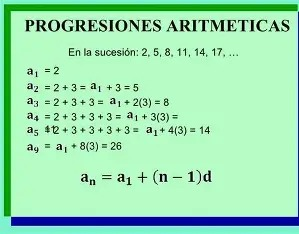

| Progresión | Sucesión | |
|---|---|---|
| Definición | Serie ordenada de números que siguen una regla específica (aritmética, geométrica, etc.). | Conjunto de números dispuestos en un orden determinado, sin necesidad de seguir una regla fija. |
| Regla | Siempre existe una fórmula o patrón que determina cada término. | No necesariamente existe una fórmula; puede ser arbitraria. |
| Ejemplo | 2, 4, 6, 8, 10 (progresión aritmética). | 3, 7, 1, 9, 5 (sucesión sin regla definida). |

